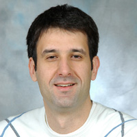

- EDUKACIJA
- Osnovnu i srednju školu (opća gimnazija), završio sam u Orahovici
- U svibnju 2006. godine diplomirao na Fakultetu strojarstva i brodogradnje u Zagrebu (konstrukcijski smjer, usmjerenje motori i vozila)
- U studenom 2006. godine upisao poslijediplomski studij "Upravljanje kvalitetom" na Ekonomskom fakultetu u Zagrebu.
- OSTALA ZNANJA
- Aktivno se koristim engleskim jezikom
- Odlično se snalazim u svim verzijama UNIX operacijskog sustava, kao što su Linux i OSX koji osobno preferiram
- Radio sam u svim Microsoft operacijskim sustavima, (od MS-DOS-a do Windows 7)
- Poznajem servesku i klijentsku stranu (HTML, CSS, JavaScript) World Wide Web-a
- Koristim programske jezike Ruby (koji preferiram), PHP, JavaScript a trenutačno usavršavam znanje Objective-C programskog jezika
- Koristio sam MySQL, SQLite i PostgreSQL relacijske baze podataka
- Služim se svim uredskim alatima
- Poznajem CAD alate CATIA, ProENGINEER i AutoCAD
- Od grafičkih alata koristim Photoshop
- RADNO ISKUSTVO
- Listopad 2004. - srpanj 2005. preko Student servisa radio u online redakciji Večernjeg lista (www.vecernji-list.hr)
- Studeni 2005. - veljača 2010. u tvrtci Energetika Marketing (www.em.com.hr) na mjestu urednika internetskog portala Energetika-net (www.energetika-net.hr)
- Od travnja 2010. direktor u Cingel d.o.o. za računalno programiranje (www.cingel.hr)
- ISTAKNUTI PROJEKTI
- Sudjelovao u razvoju portala Energetika-net (www.energetika-net.hr)
- Zajedno sa suprugom Anom u travnju 2010. osnovao tvrtku Cingel d.o.o. za računalno programiranje
- Ostvario partnerstvo sa tvrtkom SEOCORE INC. (www.seocore.com) iz Sjedinjenih Američkih Država.
- U suradnji sa SEOCORE INC. pokrenuo EmployerAdNetwork (www.employeradnetwork.com), globalni internetski servis za pomoć poslodavcima pri pronalaženju zaposlenika.
- Izrada internetske trgovine za Monicu Botkier (www.botkier.com), svjetski poznatu dizajnericu iz New York-a (u suradnju sa SEOCORE INC.)
- Izrada programskog riješenje za turistički info kiosk u Orahovici
- Aktivan sam u Open source zajednici (objavio i/ili sudjelovao u razvoju projekata) (www.github.com/vlado, www.github.com/cingel, markitup.cingel.hr)
- Na adresi www.kolodvor.net od 2008. godine uspješno vodim blog.
- TRENUTNO ZAOKUPLJEN
- Web servis za email marketing (http://www.emailmarketing.com.hr)
- Izrada prve vlastite iPhone/iPad aplikacije
- Internetska trgovina za tvrtku Friva Galeb (www.paris-lingerie.hr)
- Mali oglasnik (oglasnik.cingel.hr)
- Za bivši fakultet (FSB) sudjelujem na razvoju rješenje za automatsku analizu, i naknadnu obradu skeniranih predložaka (tehničkih nacrta, glagoljaških knjiga, ...)
- JobSoftware (www.jobsoftware.com) i ChatSoftware (www.chatsoftware.com), (u suradnju sa SEOCORE INC.)
- SLOBODNO VRIJEME
- Aktivno igram košarku, ljeti biciklizam i odbojka na pijesku
- Provodim vrijeme sa suprugom i dvogodišnjim sinom, koji će uskoro dobiti brata ili sestru :)
- Za još puno toga nažalost jednostavno nemam dovoljno vremena ...